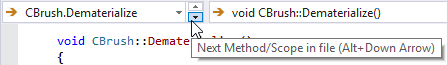

Move Scope
Use default shortcuts Alt+Down Arrow and Alt+Up Arrow, or the tiny arrows in the VA Naviation Bar, to move quickly among scopes in the active document. Move first to the next outermost scope. When at global scope, move to the adjacent scope.

Learn more.